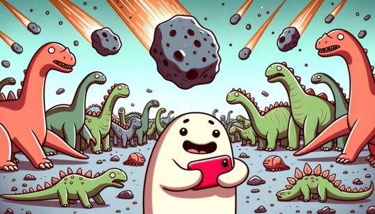
Želvušky (Tardigrada)
Mikroskopické želvušky patřící mezi nejodolnější živočichy naší planety. Přežijí extrémní teploty i tlak, ale také vysoké dávky radiace. Jsou proto oblíbeným organismem astrobiologů, kteří spekulují o možnosti jejich cestování mezi planetami. Želvušky se díky tomu podívaly již několikrát na oběžnou dráhu.
Pojmenování odkazuje na jejich pomalý pohyb a to nejen v češtině. Slováci jim říkají pomalky a latinský název tardigrada vznikl složením slov tardus = pomalý a gradus = krok. Anglické názvy moss piglets a water bear odkazují na jejich vzhled.
Taxonomie
Popsáno bylo už bylo přes 1 400 druhů z toho 110 v ČR. Celkový počet se odhaduje až na 10 000. Želvušky, blízcí příbuzní členovců (Arthropoda) a drápkovců (Onychophora), jsou řazeny do vlastního kmene Tardigrada se dvěma třídami. Eutardigrada (asi 900 druhů – *měly by nam sedet soucty) s celistvou hladkou kutikulou jsou hlavně vázány na sladkou vodu, byť třeba jen ve formě tenkého filmu na vegetaci. Heterotardigrada (asi 500 druhů) mají tělo kryté pórovitými kutikulárními pláty s různými výběžky a lze je najít hlavně v mořském prostředí.
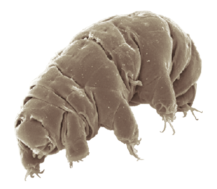
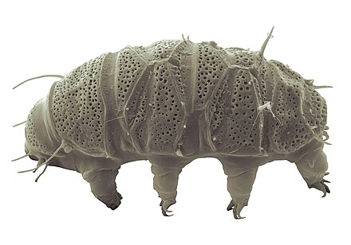
Eutardigrada (druh Milnesium tardigradum) s hladkou kutikulou a Heterotardigrada (druh Echiniscus insularis) se štítky s výraznou strukturou a výrustky Převzato z Schokraie a kolektiv, 2012 (doi:10.1371/journal.pone.0045682.g001). CC-BY-2.5.
Existuje třetí třída želvušek? =>
Třetí třída pohřešovaná po zemětřesení!
Jak se želvušky určují =>
Drápkologie
Jak staré jsou želvušky? =>
Praželvušky v jantaru
Morfologie a anatomie
Válcovité tělo (0,1-1,5 mm) je složeno z hlavového článku, a dále 4 článků nesoucích pár zavalitých končetin s drápky.
Tělo je chráněno chitinózní kutikulou buď souvislou, nebo složenou z plátů. Kutikula může být zbarvená a může obsahovat látky chránící proti UV záření. Želvušky podobně jako členovci a hlísti kutikulu v průběhu života několikrát svlékají. Některé druhy do svlečky (exuvie) kladou vajíčka.
I přes malé rozměry želvušky mají složitou tělní stavbu.
Trávicí soustava začíná ústy se stylety (bodci), které slouží k nabodnutí rostlinné (řasy, mech) nebo živočišné potravy (vířníci, hlísti, želvušky). Potrava je vysávána díky pohybu hltanu. Následuje jícen napojený na střevo končící konečníkem a řitním otvorem.U Eutardigrada je možné mluvit o kloace, protože v oblasti konečníku vyúsťují i malpigické trubice a reprodukční systém.
Dýchání probíhá bez speciálních orgánů celým povrchem těla.
Svalstvo je příčně pruhované, umožňuje pohyb těla a nohou a stahováním v okolí hltanu sání potravy.
Želvušky mají gangliovou nervovou soustavu. V hlavovém článku je laločnatý mozek, propojený s ganglii v dalších článcích břišními nervovými provazci.
Okolí želvušky vnímají pomocí hmatových štětinek (ciry) a jednoduchýma očkama (oční skvrny) tvořenými jedním pigmentovým pohárkem.
Tělní dutina označovaná jako pseudoceolom nebo nehemocel kromě orgánů obsahuje i tekutinu s volnými buňkami, které slouží jako primitivní oběhová soustava. Mají také imunitní a zásobní funkci. Někdy se jim proto souhrnně říká zásobní buňky.
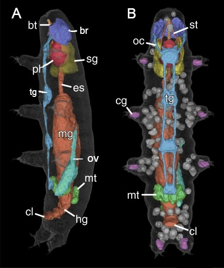
Anatomie želvušek. A - pohled z boku B- pohled ze spodu. Na panelu jsou v šedé barvě ukázány volně pohyblivé zásobní buňky. Převzato a upraveno z Gross a kolektiv, 2019 (https://doi.org/10.1186/s40851-019-0130-6). CC-BY-4.0.
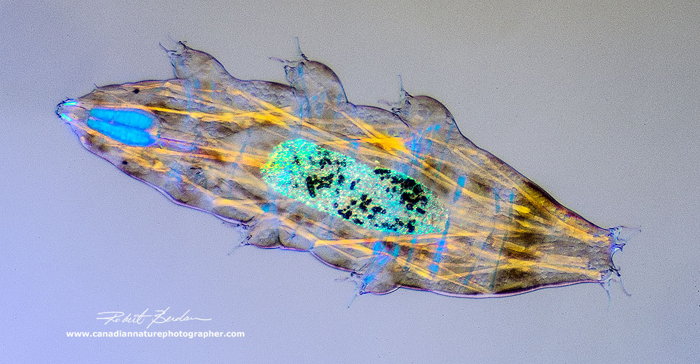
Bezbarvá svalová vlákna je možné dobře pozorovat v polarizovaném světle, ve kterém mají žlutou barvu.
[*”Proč je želvuška roztomilá?” =>”Ztrátou noh k roztomilosti”*]
Jak se želvušky určují =>
Drápkologie
Rozmnožování
Želvušky jsou hermafrodité nebo častěji gonochoristé. Samice bývají větší a v populacích běžnější. U některých druhů byly pozorovány snubní tance. Zajímavé je, že ty se liší i mezi blízce příbuznými druhy*.
Pohlavní orgány jsou nepárové. U třídy Eutardigrada mají samci párové semenné kanálky a samice jeden vejcovod, který ústí do kloaky, u třídy Heterotardigrada vyúsťuje reprodukční systém přímo na spodní straně těla. Oplození může být vnitřní, kdy samec vypouští spermie do kloaky nebo vnější, kdy samec oplozuje vajíčka nakladená volně nebo do svlečky. Možné je i asexuální rozmnožování pomocí partenogeneze.
Vajíčka želvušek jsou hladká nebo různě strukturovaná, a diky veliké rozmanitosti slouží jako významný určovací znak]. Množství vajíček záleží na druhu, u rekordmanů může jít až o 30 vajíček v jedné snůšce. U některých druhů líhnutí probíhá již po 10-14 dnech, u jiných může vývoj trvat i několik měsíců a dokonce vyžadovat i vyschnutí.
Výskyt a životní strategie
Želvušky jsou kosmopolitně rozšířeny. Obývají sladkovodní, mořská i terestrická prostředí. Najdeme je ve všech zemských šířkách, žijí v Himalájích i na hlubokomořském dně*. Narazíme na ně na ledovcích i v horkých pramenech. Obývají mechy a lišejníky, ale i jiné rostliny, rozkládající se listí, půdu i pobřežních sedimenty.
Aktivní stádia jsou vždy vázána na vodu, postačuje jim ale i tenký vodní film. Přežívají dobře vyschnutí. Výhodou života v opakovaně vysychajícím prostředí může být redukce vodu vyžadujících predátorů nebo parazitů. Vyschnutí může být dokonce nutné pro dokončení životního cyklu.
Živí se nejen bakteriemi, řasami a rostlinami, ale také živočichy jako jsou prvoci, vířníci, a hlístice Některé druhy také loví jiné želvušky. Potrava se může měnit během vývojového cyklu.
[*“Jsou želvušky na Měsíci?” => ”Střelené želvušky”*]
Pyxidium, stopař želvušek =>
Taxi, prosím!
Přežití v extrémech
Schopnost želvušek přežít chemické i fyzikální extrémy je neobyčejná.
Vydrží teploty -273 °C do 150 °C. Odolávají hydrostatickému tlaku až 7.5 GPa*, ale přežijí i ve vakuu. Nezabije je ani tisícinásobek dávky ionizující radiace smrtelné pro člověka.
Obvykle je tato odolnost spojená se schopností vytvářet v nepříznivých podmínkách klidová stádia se sníženou nebo zastavenou intenzitou metabolismu. Mluvíme o anabióze nebo také o kryptobióze. Existuje několik typů podle spouštěcího faktoru: kryobióza, osmobióza, anoxybióza, anhydrobióza. Čím delší dobu stráví želvušky v anabióze, tím vyšší je riziko poškození buněk a orgánů a šance na úspěšné zotavení snižují.
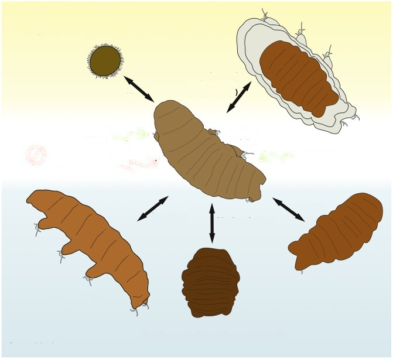
Reakce želvušek na nepříznivé podmínky. Převzato a upraveno z Møbjerg a Neves, 2021 (https://doi.org/10.1016/j.cbpa.2020.110890). CC-BY-4.0.
Při vstupu do anabiózy při vysychání, takzvané anhydrobiózy, podíl vody v těle klesá na jednotky procent. Želvušky snižují propustnost kutikuly a sbalují se do takzvaného soudečku. Tvorba soudečku je rychlá, trvá řádově minuty. Rehydratace vede k rychlému rozbalení soudečku, ale obnovení metabolické aktivity obvykle trvá hodiny až dni, protože musí dojít k opravě buněk a tkání. Roli zde hrají proteiny teplotního šoku, které pomáhají správnému složení denaturovaných proteinů.
Soudeček vytvářejí také želvušky vystavené vysokým koncentracím solí a jiných osmoticky aktivních látek, což vede k dehydrataci organizmu. Mluvíme o takzvané osmobióze.
Do kryobiózy přecházejí želvušky vystavené mrazu. Klesá metabolická aktivita a někdy se vytváří se soudeček. Jiné organismy jako jsou bakterie, hlísti a vířníci se brání tvorbě ledových krystalů poškozujících buňky syntézou vysokých koncentrací cukru trehalózy. Byť u některých želvušek k syntéze trehalózy také dochází, hlavní roli hrají proteiny TDP (tardigrade-specific intrinsically disordered proteins , česky vnitřně pro želvušky specifické neuspořádané proteiny) s podobnou funkcí.
Želvušky jsou citlivé na nedostatek kyslíku. V takzvané anoxybióze netvoří soudeček. Želvuška upadá do kómatu, přičemž do organismu vstupuje neregulovaně velké množství vody. Do aktivního stavu se vrátí po obnovení hladin kyslíku.
Jiným klidovým stavem je cysta, kterou želvušky vytváří v reakci na změna délky dne, teploty nebo nedostatek potravy. Toto přerušení vývoje, které se vyznačuje snížením nebo úplným pozastavením metabolické aktivity se nazývá diapauza.
Jak dlouho želvuška přežije v kryptobióze? =>
Šípková Růženka nestárne
Jak vysoké dávky radiace želvuška vydřží? =>
Kolik dá želvuška banánů?
Jak želvuška chrání svou DNA? =>
DNA v brnění
Jak se želvuška brání proti UV záření? =>
Štít proti ultrafialovému záření
Přežíjí želvušky dopad meteoritu? =>
Střelené želvušky
Jde vysterilizovat naši plantu? =>
Všechno dobrý, dokud se nevaří oceány …
Želvušky ve volném kosmu =>
Houstone, tady želvuška!
Želvušky v kultuře
Želvušky si svou odolností a roztomilým vzhledem získaly oblibu i mezi širokou veřejností. I několika metrové modely želvušek najdeme v muzeích po celém světě. U nás jsou součástí expozice Národního muzea Zázraky evoluce nebo muzea Mikrokosmos v Hamru na Jezeře. Motiv želvušek si vypůjčila česká hudební skupina Hentai Corporation nebo ruská skupina Tardigrade Inferno, píseň Tardigrade Song nahrál anglický hudebník Cosmo Sheldrake. V seriálu Star Trek obří želvuška naviguje kosmickou loď a v seriálu Městečko South Park (díl Moss Piglets) želvušky tančící na hudbu Taylor Swift mají zachránit svět. Do povědomí děti se pak dostaly díky epizodě seriálu Scooby-Doo and Guess Who? - Space Station Scooby a diky komiksu Paper Girls.
250 let studia želvušek - spor o počet nohou a zmrtvýchvstání
Poprvé želvušky popsal německý protestantský pastor a zoolog Johann August Ephraim Goeze, a to v roce 1773, když se ve volných chvílích věnoval mikroskopování. Tvor v mikroskopu vypadal jako miniaturni medvěd, proto jej pojmenoval „kleiner Wasserbär“, malý vodní medvěd. Italský kněz a biolog Lazzaro Spallanzani o 4 roky později použil název Il tardigrado, odtud moderní vědecký název Tardigrada. Pánové se ale nemohli shodnout na počtu noh. Goeze noh napočítal 8, Spallanzani 6. Třetí pionýr Eichhorn noh viděl dokonce 10.
Daleko zásadnější spor vypukl o to, jestli želvuška může přežít vyschnutí. Nevěřili tomu ani mnozí, co na vlastní oči viděli, jak se soudeček po kontaktu s vodou mění v aktivní želvušku. Původní želvuška nemohla přeci přežít, to musí být potomek nebožky! Krásné video o tomto sporu plné želvušek v pohybu najdete {*zde;* https://www.youtube.com/watch?v=2q30bqqvcIo}

První kresba želvušky z roku 1773. Vědci trefili počet noh hned napoprvé!
Třetí třída pohřešovaná po zemětřesení!
Kromě tříd Eutardigrada a Heterotardigrada se někdy uvádí také třída Mesotardigrada. Zahrnuje jediný druh Thermozodium esakii popsaný v roce 1937. Lokalita výskytu bylo zničena při zemětřesení a popsaný exemplář byl ztracen. Kdo ví, zda ale šlo vůbec o želvušku, když si neporadila se seismickou činností.
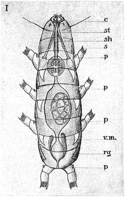
|*Pohřešovaný jedinec Thermozodium esakii, jediný známý zástupce své třídy.
Kresba ze zprávy o nálezu (Rahm, 1937).*|
Drápkologie
Správně určit druh želvušky vyžaduje opravdového experta. Významný determinačním znakem želvušek třídy Eutardigrada je počet, tvar a uspořádání drápků. Druhy želvušek se také liší počtem, tvarem a umístěním kutikulárních vystuženin savého hltanu, takzvaných makro- a mikroplakoidů.
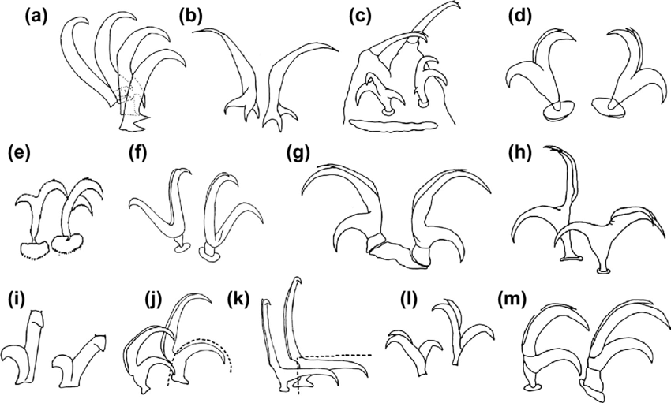
Příklady drápků Eutardigrada. Bertolani a kolektiv (2014) Molecular Phylogenetics and Evolution 76: 110-126. Fair use.

Detail ústního aparátu želvušky. Út - ústní trubička, sh - savý hltan, s -stylety, ma - makroplakoidy, mi -mikroplakoidy. Foto Dr. Robert Berdan (https://www.canadiannaturephotographer.com). Použito se svolením autora.
Praželvušky v jantaru
Jantar je zkamenělá pryskyřice dávných stromů. Polapeni a díky tomu zachováni v ní bývají nejčastěji členovců, hlavně hmyz, hlísti, měkkýší a ve vzácných případech i drobní plazi. A taky želvušky. Mikrofosílie v jantaru dokládají, že želvušky se na Zemi vyskytovaly již v křídě , tedy v druhohorách. Jde už vlastně o moderní želvušky. Předpokládá se tedy, že první želvušky se objevily dávno předtím, jejich předpokládaní předci se objevili na úsvitu prvohor.
Zde jsou některé z vzácných nálezů.
Milnesium swolenskyi - nalezena v New Jersey (USA) v roce 2000, pochází z doby asi před 90 miliony let.
Beorn leggi - nalezena v Manitobě (Kanada) v roce 1946, pochází z doby asi před 72 miliony let.
Paradoryphoribius chronocaribbeus - nalezena v Dominikánské republice v roce 2021, pochází z doby asi před *
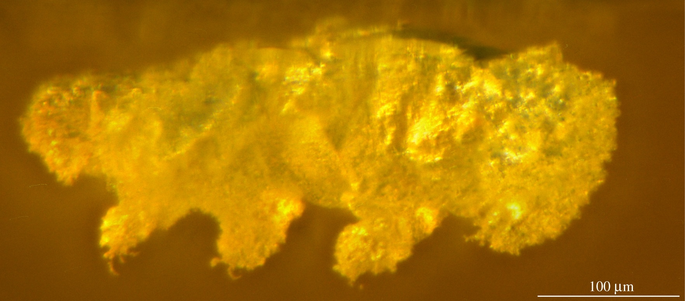
Druhohorní želvuška Paradoryphoribius chronocaribbeus v jantaru. Mapalo a kolektiv, 2021 (https://doi.org/10.1098/rspb.2021.1760). CC BY 4.0.
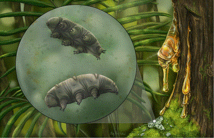
Umělecká rekonstrukce Paradoryphoribius chronocaribbeus od Holly Sullivan. Mapalo a kolektiv, 2021 (https://doi.org/10.1098/rspb.2021.1760). CC BY 4.0
Ztrátou noh k roztomilosti
Proč jsou želvušky tak roztomilé? Možná proto, že dávný předek podobný pračlenovcům a pradrápkovcům ztratil články a s nima i nohy ve střední části těla. Celé tělo želvušek kromě posledního článku vlastně odpovídá hlavovým článkům ostatních členovců. A protože pak želvuška neměla nohy na rozdávání, nemohla se z nohou přední části vyvinout hrozivá makadla a kusadla jako u klepítkatců.
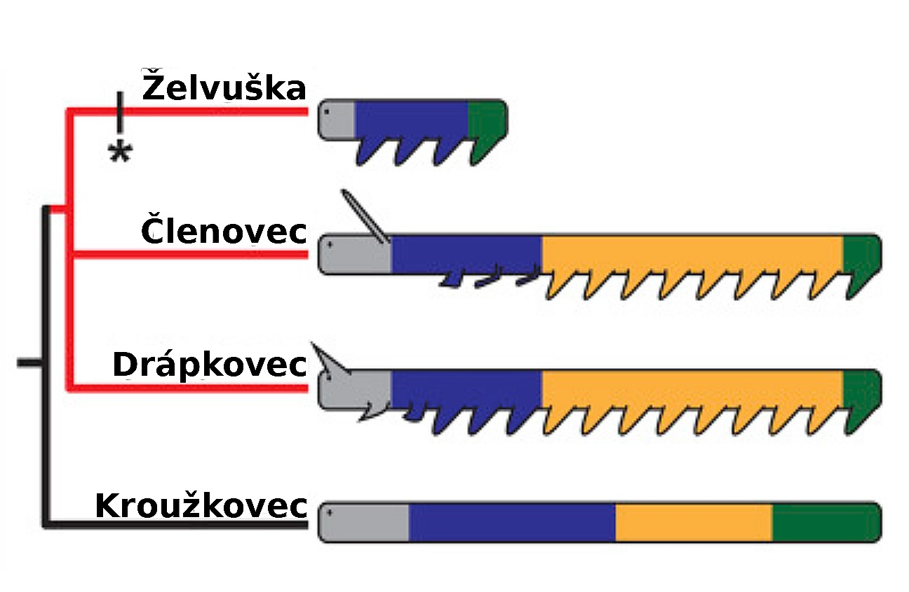
Kompaktní tělo moderních želvušek vzniklo ztrátou článků ve střední části těla. Událost označuje hvězdička. Převzato a upraveno z Smith a kolektiv, 2016 (DOI:https://doi.org/10.1016/j.cub.2015.11.059). Fair use.
Šípková Růženka nestárne
Zatímco aktivní želvušky se dožívají několika měsíců nebo až dvou let, jejich vajíčka a klidová stádia přežijí desetiletí. Soudeček druhu Echiniscus testudo ve vyschlém mechu byl oživen po 20 letech. Želvušky Acutuncus antarcticus nalezené ve zmrzlém mechu obnovily aktivitu dokonce po více než 30 letech. Publikace ze 40. let minulého století uvádí, že po rehydrataci pohla nohou želvuška v mechu odebraném před 120 lety*.
Zajímavé je, že želvuška v klidovém stádiu je vlastně taková Šípková Růženka. Experimenty s opakovaným vysoušením nebo zamražováním a následným oživováním ukázaly, že na dobu strávenou v kryptobióze se zastaví stárnutí. V roce 2021 vědci oznámili, že se jim podařilo oživit vířníky ze sibiřského permafrostu po více než 20 tisících let. Skrývá permafrost také nějakou želvušku rekordmanku?
Kolik dá želvuška banánů?
Banány jsou bohaté na draslík a mezi draslíkovými atomy se nachází asi 0.01% radioaktivního izotopu 40K*. Jsou tedy slabě radioaktivní. Žertovná jednotka Banana equivalent dose (BED) je definována jako množství radiace v jednom banánu a odpovídá 0,1 μSievertu.
Radiace je to minimální, ale náklaďák plný banánů údajně způsobil falešný poplach při průchodu radiačním monitorem používaným k detekci možného pašování jaderného materiálu v přístavech ve Spojených státech**. Banány se ale nemusíte bát jíst, tělo přebytek draslíku rychle vyloučí. A draslík a tedy i jeho radioaktivní izotop se vyskytuje ve všem živém, tedy i ve vás. Platí obojí: Není draslík, není život. Kde je draslík, tam to září.
Zpět k naší otázce, Pokud želvuška přežije dávku radiace *…, kolika BED to odpovídá?
Pro zjednodušení předpokládejme, že 1 Gray odpovídá jednomu Sievertu.
A kolika BED odpovídá smrtelná dávka pro člověka?
V tomto díle skvělého vědeckého komiksu xkcd
si můžete rychle vyhledat, kolik banánů dostanete, až pujdete na rentgen, poletíte letadlem …
Jak želvuška chrání svou DNA? =>
DNA v brnění
Jak se želvuška brání proti UV záření? =>
Štít proti ultrafialovému záření
Jde vysterilizovat naši plantu? =>
Všechno dobrý, dokud se nevaří oceány …
Želvušky ve volném kosmu =>
Houstone, tady želvuška!
DNA v brnění
DSUP je protein, který mají v buňkách jen želvušky. Váže se na DNA a funguje jako brnění chránící ji proti poškození zářením a chemikáliemi. Když byl gen pro tvorbu tohoto proteinu přenesen do lidských buněk, čelily daleko lépe rentgenovému záření. A když se tato obrana poskytla octomilkám a rostlinám, byly také mnohem odolnější vůči poškození DNA. Je to jediný trik, který želvušky vystavené radiaci používají? Určitě ne, v naší laboratoři jsme pozorovali, že ozářené želvušky produkují násobně vyšší množství různých proteinů opravujících poškozenou DNA než člověk nebo myš.

Vnesení (klonování) genu pro ochranný protein DSUP chrání lidské buňky rostoucích v Petriho miskách v živném médiu proti radiaci. Hashimoto a kolektiv (2017), https://www.mdpi.com/2075-1729/7/2/26 .
Jak vysoké dávky radiace želvuška vydřží ? =>
Kolik dá želvuška banánů?
Jak se želvuška brání proti UV záření ? =>
Štít proti ultrafialovému záření
Jde vysterilizovat naši plantu ? =>
Všechno dobrý, dokud se nevaří oceány …
Želvušky ve volném kosmu =>
Houstone, tady želvuška!
Štít proti ultrafialovému záření
Indičtí vědci popsali nový druh želvušky odolné k ultrafialovému (UV) záření o síle, která obvykle zabíjí i odolné bakterie a viry. Paramacrobiotus BLR za tuto schopnost vděčí hnědočervenému pigmentu, který nebezpečné UV záření změnil v neškodné modré světlo. Oblíbeným laboratorním hlístům Caenorhabditis elegans nebo želvušce Hybsibius exemplaris, kteří jsou citliví k působení UV záření, tento fluorescenční štít chybí. Vědci je proto zkusili pokrýt ochranným pigmentem z odolné želvušky - a fungovalo to!
Odkaz na článek: https://royalsocietypublishing.org/doi/10.1098/rsbl.2020.0391
Jak vysoké dávky radiace želvuška vydřží? =>
Kolik dá želvuška banánů?
Jak želvuška chrání svou DNA? =>
DNA v brnění
Jde vysterilizovat naši planetu? =>
Všechno dobrý, dokud se nevaří oceány …
Želvušky ve volném kosmu =>
Houstone, tady želvuška!
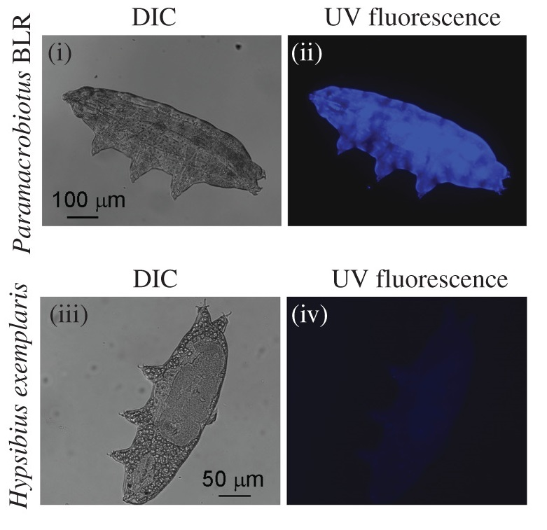
Modrá fluorescence želvušek po ozáření ultrafialovým světlem. Odolný Paramacrobiotus BLR září daleko intenzivněji než citlivý Hybsibius. Převzato a upraveno z .. *. CC-BY-4.0
Houstone, tady želvuška!
Dehydratované soudečky želvušek se podívaly na oběžnou dráhu poprvé v roce 2007 na palubě sondy FOTON-M3. Vystaveny byly podmínkám volného kosmu - vakuu a kosmickému záření. Po návratu na Zem skoro 70 procent jedinců, kteří byli chráněni filtrem před ultrafialovým zářením, ožilo krátce po rehydrataci, i když mnoho z nich nakonec zahynulo. Jedinci vystavení plnému slunečnímu záření přežili jen výjimečně.
Experimenty na Mezinárodní vesmírné stanici ukázaly že mikrogravitace a kosmické záření nemají na přežití želvušek významný vliv.
V roce 2019 byly želvušky vyslány na Měsíc, ale přistávací modul havaroval. Jsou tedy na Měsící? Podrobněji o tom v samostatném oddílu.
[*“Jsou želvušky na Měsíci?” => ”Střelené želvušky”*]
Jak vysoké dávky radiace želvuška vydřží ? =>
Kolik dá želvuška banánů?
Jak želvuška chrání svou DNA ? =>
DNA v brnění
Jak se želvuška brání proti UV záření ? =>
Štít proti ultrafialovému záření
Všechno dobrý, dokud se nevaří oceány …
Astrobiologové se nedávno pokusili odhadnout, jaká je pravděpodobnost toho, že dojde k takové katastrofě, že na Zemi zahyne vše živé. V úvahu brali výbuch supernovy, záblesky gama záření, kolizi s masivním meteoritem i blízký průlet jiné planety. Zánik života považují za jistý pokud se vyvaří voda oceánu*. Autoři studie k vlastnímu překvapení zjistili, že “zatímco lidský život je poněkud křehký, odolnost členů skupiny Ekdyzoa jako je želvuška Milnesium tardigradum činí globální sterilizaci nepravděpodobnou.”
Jak dlouho želvuška přežije v kryptobióze? =>
Šípková Růženka nestárne
Jak vysoké dávky radiace želvuška vydřží? =>
Kolik dá želvuška banánů?
Jak želvuška chrání svou DNA? =>
DNA v brnění
Jak se želvuška brání proti UV záření ? =>
Štít proti ultrafialovému záření
Přežíjí želvušky dopad meteoritu? =>
Střelené želvušky
Želvušky ve volném kosmu =>
Houstone, tady želvuška!
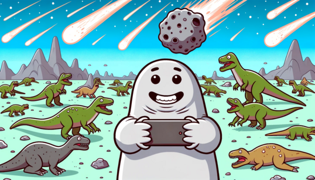
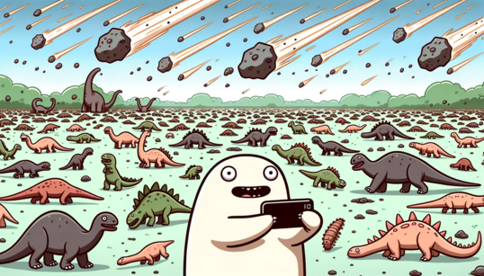
Střelené želvušky
V roce 2019 se izraelská sonda neúspěšně pokusila přistát na měsíci. Na palubě vezla želvušky ve stádiu soudečku na **astrobiologické experimenty. Mohly ztroskotání přežít? A mohly by přežít dopad meteoritu a třeba se na meteoritech šířit mezi planetami, tak jak si představují příznivci teorie panspermie? Tato otázka trápila vědce z Kentské univerzity. Sestavili si proto speciální dělo* ze kterého želvušky stříleli. Želvušky přežívaly nárazy po vystřelení rychlostí asi 0,8 km/s, ale ne už 0,9 km/s. Odpovídající tlaky byly 1.01 GPa a 1.14 GPa. V případu neštastné měsíční sondy byly tlaky údajně příliš vysoké, aby přežití umožnily.
Také meziplanetární meteority se pohybují příliš vysokou rychlostí. Pokud by ale šlo o přenos z planety na blízké měsíce, přežití nárazu není vyloučeno. Pak se teda ještě úspěšně zabydlet. /rychlost sondy?* neni relvantnejsi tlak?// https://www.liebertpub.com/doi/full/10.1089/ast.2020.2405
*(Einsteine, slyšel jste už o želvuškách ?*)
Kvantová provázanost je jev, při němž dochází k propojení dvou částic tak, že se mohou vzájemně ovlivňovat, ať je dělí jakákoli vzdálenost. Einstein na toto “strašidelné působení na dálku” do konce života nevěřil. A dlouho trvalo, než se podařilo experimentálně jednoznačně prokázat, že tento jev opravdu existuje. Výsledkem je Nobelova cena za fyziku 2024*. Kromě částic se podařilo kvantově provázat i atomy, molekuly a dokonce miniaturní supravodivé obvody. A teď se takovým obvodem podařilo provázat želvušku zmrazenou na zlomek stupně nad absolutní nulu. Želvuška se po rozmrazení a návratu z kvantového stavu měla čile k životu. Kdo nevěří, ať tam běží. Potká se tam s několika vědci, kteří výsledek experimentu zpochybňují.
Autoři studie experiment vysvětlují ve videu dostupném zde.
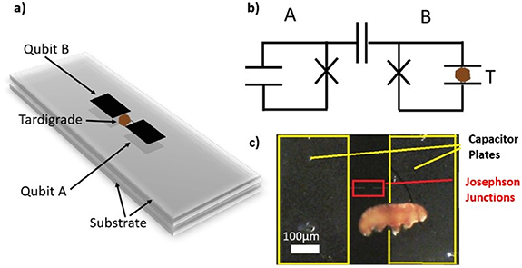
Obrázek ze studie Lee a kolektiv, 2022 (https://iopscience.iop.org/article/10.1088/1367-2630/aca81f). Povšiměte si speciálního prvku T v schématu obvodu. CC-BY-4.0
Taxi, prosím!
Pyxidium tardigradum, zástupce nálevníků (Ciliophora) žije přichycený ke kutikule želvušek. Obvykle nejsou považováni za parazity, znamenají pro želvušky ale váhu navíc, zejména pokud jich je větší množství. Zajímavé je, že některé zahraniční populace jsou P. tardigradum promořené*(detaily), ve vzorcích z České republiky vídáme želvušky s černým pasažérem jen vzácně.
Svézt se ale může i želvuška a to nedobrovolně. Želvušky naštěstí dovedou přežít v trávicím traktu žížal a žížaly tak přispívají k jejich šíření.

Ramazzottius oberhaeuseri s přisedlými jedinci Pyxidium tardigradum. Foto Dr. Robert Berdan (https://www.canadiannaturephotographer.com). Použito se svolením autora.
‘’’
(*Kolik buněk mají želvušky)
Mláďata již mají plný počet dospělých buněk, dorůstají spíše zvětšováním buněk (hypertrofie) než dělením. (*check- eutelie se resila a nevim, jak to dopadlo, urcite jsou popsane mitozy v ceolom bunkach).
Je to jak píšeš, momentálně je ten stav, který želvušky mají brán jako nepravá eutelie - I když většina bude mít víceméně podobný počet buněk, vzácně se budou nacházet I mitotické zásobní buňky, jak ostatně tvrdí kolegyně Czerneková, výskyt byl myslím něco mezi 5-8% buněk
(https://www.researchgate.net/publication/310745904_Mitosis_in_storage_cells_of_the_eutar#digrade_Richtersius_coronifer(
‘’’
‘’’
Jak úspěšně zmrznout
Popsat roli trehalozy a TSDP jak funguji?
[*check – stary práce tu nukleaci ukazovaly, ted myslim, ze videl paper, kde kalorimetrie hovori proti tomu]
Ochrany organismu se účastní i kryoprotektanty a látky schopné vyvolávat tvorbu ledových krystalků (ice nucleating agents). Ty jsou umístěny vně buněk a fungují jako „magnety“, které přitahují vodu z buněk do mezibuněčných prostor. Snížení teploty vede k procesu tvorby ledu, při němž může být růst krystalků kontrolován, což má za následek vznik menších a potenciálně méně škodlivých krystalků ledu. Poškození buněk a DNA zabraňuje také glycerol.
‘’’